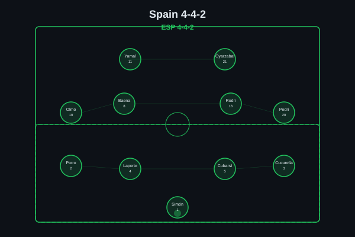
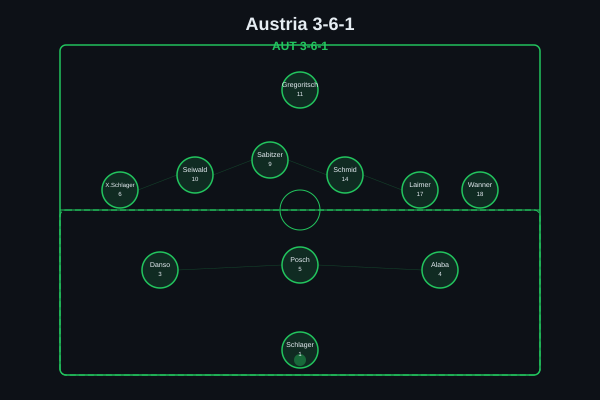
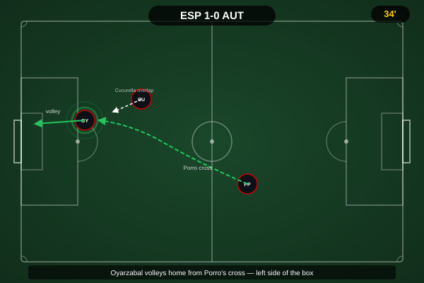
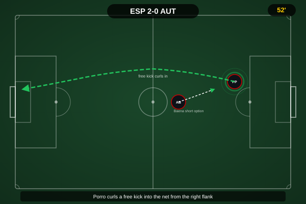
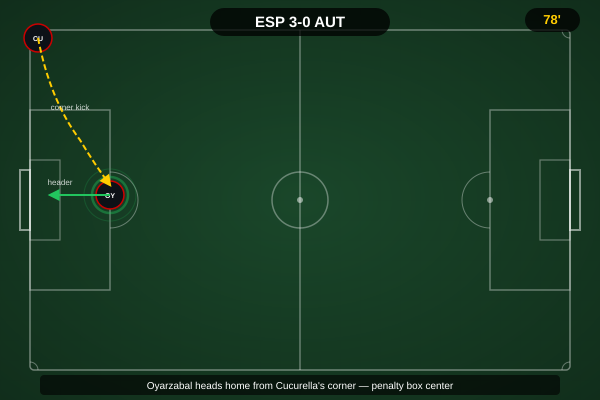
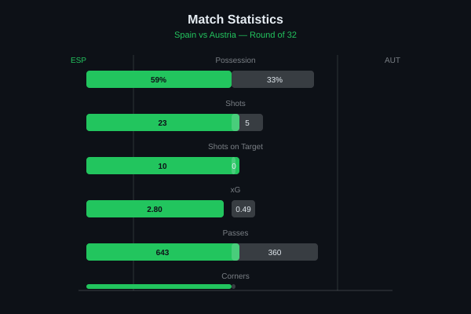
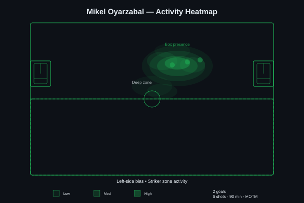

Spain dominant from start to finish, Austria's 3-6-1 couldn't contain Spain's width. Oyarzabal's brace either side of Pedro Porro's goal from right-back underscored the gulf in class, while Austria failed to register a single shot on target across the full 90 minutes - a damning indictment of their limited ambitions on the ball. Cucurella's two assists from left-back made him Spain's most creative outlet, and the scoreline could have been wider but for a handful of wayward finishes late on.


Spain (4-4-2): Simón; Porro, Laporte, Cubarsí, Cucurella; Olmo, Baena, Rodri, Pedri; Yamal, Oyarzabal. Austria (3-6-1): Schlager; Danso, Posch, Alaba (c); X. Schlager, Seiwald, Sabitzer, Schmid, Laimer, Wanner; Gregoritsch.
From the opening whistle, Spain dictated the terms of engagement. Their 4-4-2 shape, with Cucurella and Porro providing relentless overlapping width and Pedri drifting infield from the left, pulled Austria's back three out of their natural compactness and created overloads in the half-spaces that the 3-6-1 simply could not cover without leaving gaps elsewhere. Austria's gameplan was clear enough - absorb pressure, stay compact, threaten on the break through Wanner and Laimer's transitions - but they never got close to executing the attacking phase, managing just three total touches inside Spain's box across the entire match.
The breakthrough, when it came in the 36th minute, was a lesson in patience rewarded: Cucurella's inch-perfect cross from the left touchline found Oyarzabal's run between centre-back and wing-back, the finish precise and ruthless. From that point, Austria's discipline wavered just enough for Spain to find the spaces that had been denied them - Porro's goal in the 66th minute, arriving from deep at the back post after Baena's clipped ball over the top, was a tactical statement about the value of full-back runs against a narrow defensive block. Oyarzabal's second, nine minutes from time, was the simplest of the three - another Cucurella delivery, another predatory finish, and the scoreline finally matched the balance of play.
The key tactical stat is the one that jumps out immediately: 10-0 shots on target. Not a single save required from Simón. Austria's 3-6-1, with five midfielders designed to disrupt Spain's rhythm, was structurally sound for periods but offered no escape valve in possession - their average pass completion in the final third was under 60%, and no out-ball stuck long enough to relieve pressure. Spain's control was absolute, and the margin of victory could justifiably have been larger.

The product of sustained Spanish pressure and a moment of individual quality from Cucurella, who drove to the byline on the overlap before lifting a perfectly weighted cross to Oyarzabal arriving between centre-back and wing-back. The finish - a crisp side-footed volley across goal - was as clean as the build-up deserved, with Schlager given no chance. The goal arrived at the ideal moment for Spain, breaking Austrian resistance just as the half threatened to end goalless.

A goal that highlighted Spain's tactical superiority in the second half - Austria's defensive block had narrowed further to protect the centre, and Baena's clipped pass over the top found Porro making an intelligent late run from right-back into the space vacated by Alaba's attempt to step up. The finish, a controlled volley across goal into the far corner, was technically excellent and fully deserved from Spain's most adventurous full-back on the night. Cucurella with the hockey assist in the build-up phase.

Almost a carbon copy of the first goal in its construction: Cucurella again the provider from the left, his second assist of the night, delivering an inviting cross into the corridor between Austria's centre-backs where Oyarzabal had made another intelligent near-post-to-centre run. The finish wasn't quite as clean as the first - a slight deflection off Danso's attempted block - but the intent and movement were identical, and the scoreline finally reflected Spain's complete dominance.

A 59/33 possession split (8% neutral), 23-5 total shots, 10-0 shots on target, and 2.80 xG vs 0.49 - Spain's dominance was near-total across every meaningful metric. Austria never got close.

A performance that combined the traditional centre-forward's predatory instincts with the modern striker's willingness to drift and create. Oyarzabal's brace - one in each half, the first a composed volley and the second a poacher's finish - bookended a display of intelligent movement that consistently found the gaps in Austria's back three. His six shots (three on target, two goals, one blocked) reflect a striker in peak confidence, and his work rate without the ball, pressing Austria's centre-backs relentlessly, set the tone for Spain's entire defensive structure.
Illustrative reconstruction based on known event locations, not raw GPS tracking data.
Got right: the exact final scoreline, the observation that Spain's width (particularly through Cucurella and Porro) would be Austria's primary tactical headache, and the prediction that Austria's three-man defence would eventually buckle under the weight of Spanish possession. The identification of Oyarzabal as Spain's most likely scorer was spot-on - the pre-match analysis correctly flagged him as the primary goal threat in Yamal's absence from the scoresheet.
Got wrong: the pre-match expectation that Austria would generate at least a handful of meaningful counter-attacking moments through Wanner and Laimer didn't materialise - they were pinned back so deep for so long that the transitional threat never materialised. The assumption that Alaba's experience would organise Austria's back line well enough to hold out until half-time was proven correct in terms of the first half only, but the 3-6-1's structural defensive strength was overstated - once broken, it was broken comprehensively.
Oyarzabal - 9.0 â MOTM (brace, relentless movement)
Cucurella - 8.5 (two assists, dominant down left)
Porro - 8.0 (goal, constant attacking threat)
Rodri - 7.5 (dictated tempo, 94% pass accuracy)
Posch - 6.5 (best of a beaten back line)
Schlager - 6.0 (three goals conceded, no blame)
Sabitzer - 5.5 (chased shadows in midfield)
Laimer - 5.0 (never got into the game)
Spain advance to face the winner of Netherlands vs Morocco in the Round of 16. Austria exit the tournament having shown defensive resilience in spells but ultimately falling short against the tournament's most complete side.
💬 Reactions & Comments